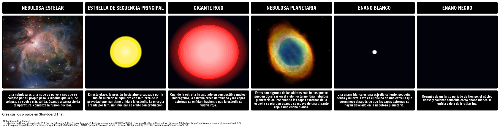

Las estrellas son motores de energía cósmica que producen calor, luz, rayos ultravioleta, rayos X y otras formas de radiación. Están compuestas casi en su totalidad de gas y plasma, un estado de supercalentamiento de la materia compuesta de partículas subatómicas. Aunque la estrella más conocida, el Sol, existe en solitario, tres de cada cuatro estrellas existen como parte de un sistema binario compuesto por dos estrellas orbitando mutuamente.
Nadie sabe cuántas estrellas existen, pero podrían alcanzar un número extraordinario. Nuestro universo podría albergar más de 100 000 millones de galaxias, y cada una de ellas podría tener más de 100 000 millones de estrellas. Tan sólo en una noche clara, desde la Tierra pueden observarse alrededor de 3000 estrellas a simple vista. Los humanos de diferentes culturas han dibujado el cielo mediante estas estrellas.
El ciclo de vida de una estrella dura mil millones de años. En general, mientras más grande sea una estrella, más corto es su tiempo de vida. El nacimiento de una estrella ocurre dentro de las nebulosas, que son nubes de polvo constituidas por hidrógeno. A lo largo de miles de años, la gravedad provoca que las cavidades de materia densa dentro de la nebulosa colapsen bajo su propio peso. Una de estas masas de gas que se contrae, denominada protoestrella, representa la etapa naciente de la estrella. Debido a que el polvo de las nebulosas las oculta, las protoestrellas son difíciles de detectar.
A medida que una protoestrella se hace más pequeña, gira más rápido debido a la conservación del momento angular (el mismo principio que explica por qué aumenta la velocidad a la que un patinador gira cuando aprieta sus brazos). La presión en aumento provoca temperaturas elevadas, y durante este tiempo, una estrella ingresa en lo que se denomina la fase T Tauri, una etapa relativamente breve. Millones de años después, cuando la temperatura del núcleo llega a los 27 millones de grados Fahrenheit (es decir, 15 millones de grados Celsius), la fusión nuclear comienza, encendiendo el núcleo y desencadenando la próxima (y más larga) fase de la vida de una estrella, conocida como la secuencia principal.
La mayor parte de las estrellas de nuestra galaxia, incluyendo al Sol, se clasifican como estrellas de secuencia principal. Existen en un estado estable de fusión nuclear, en el que transforman al hidrógeno en helio e irradian rayos X. En este proceso se emite una gran cantidad de energía, ya que se mantiene alta la temperatura de la estrella, que brilla intensamente.
El 90 por ciento del tiempo de vida de las estrellas transcurre en la fase de secuencia principal. El Sol terrestre, de unos 4,6 mil millones de años de antigüedad, es una estrella enana amarilla de tamaño promedio; y los astrónomos prevén que continuará en la fase de secuencia principal por algunos miles de millones de años más.
A medida que avanza la vida de las estrellas hacia el final, gran parte de su hidrógeno se convierte en helio. El helio desciende hacia el núcleo de la estrella, aumentando su temperatura y provocando que su capa externa de gases calientes se expanda. Estas estrellas inmensas y expansivas se denominan gigantes rojas. Hay muchas formas en las que la vida de una estrella puede finalizar, y su destino depende de cuán gigante sea.
La fase de gigante roja es, en realidad, el paso previo a que una estrella se desprenda de sus capas externas y se convierta en un cuerpo pequeño y denso denominado enana blanca. Las enanas blancas enfrían su temperatura durante mil millones de años. Algunas, si existen como parte de un sistema de estrellas binarias, pueden acumular la materia excedente de sus estrellas compañeras hasta que sus superficies exploten; y así se producen las novas brillantes. Con el tiempo, todas las enanas blancas se oscurecen y dejan de producir energía. En ese momento, que los científicos aún no han observado, pasan a denominarse enanas negras.
Las estrellas masivas evaden esta evolución estelar, y en cambio, se apagan con una explosión. Así es como surgen las supernovas. Si bien superficialmente pueden parecer gigantes rojas en expansión, sus núcleos están contrayéndose, y con el tiempo su densidad es tal que colapsan, y producen una explosión estelar. Estas explosiones catastróficas dejan un pequeño núcleo que puede convertirse en una estrella de neutrones, e incluso, si el remanente es lo suficientemente masivo, en un agujero negro.
Debido a que determinadas supernovas tienen patrones previsibles de destrucción y de luminosidad resultante, los astrónomos las utilizan como “luces estándar”, o instrumentos de medición astronómica, que los ayudan a medir las distancias en el universo y a calcular su velocidad de expansión.